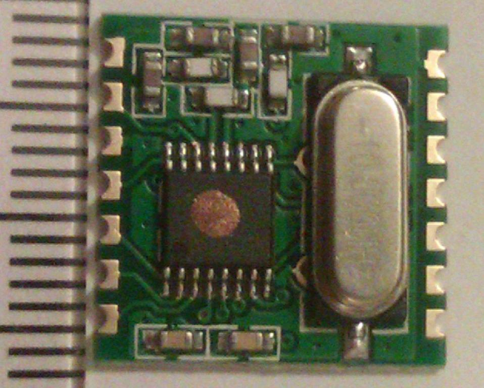

Ok, Firstly the "pre built image" is built on a full Raspbian OS and is then put into "read-only" mode to protect the SD card (and your system settings) you can over rule the "read-only" mode at any time using the " rpi-rw " command.
When you first boot up the "pre built image" it is in "read-only" mode by default, therefore the "raspi-config" set-up menu (for keyboard, locale, timezone etc) will not work because it cannot save the new settings. If you exit the menu and once the Pi has booted up, type
rpi-rw
sudo raspi-config
this will allow you to use the menu (but NOT the expanding file-system option) and the settings will be saved.
The "wiki" you linked to is more about the design and technical aspects of the RFM2Pi such as firmware uploads and debugging. It doesn't tell you about the basic install steps which involve changing /boot/cmdline.txt and /etc/inittab to release the serial port from being used by the serial console (default on raspbian)
Firstly edit the inittab file by adding a '#' to the beginning of the last line, so it reads;
# T0:23:respawn:/sbin/getty -L ttyAMA0 115200 vt100
...and edit the cmdline.txt file by changing the single line to;
dwc_otg.lpm_enable=0 console=tty1 root=/dev/mmcblk0p2 rootfstype=ext4 elevator=deadline rootwait
This "conflict" is probably the reason the Pi is not happy to see the RFM2Pi module plugged in, but it could also be due to the limited amount of spare space in the Raspbian image, since you have installed arduino the space must be very low. How much disk space is available if you run " df -h " ?
Paul
NOTE - I have been unable to post this reply to http://openenergymonitor.org/emon/node/10039 so have had to try starting a new thread instaed.
Re: First open energy monitor project (PART 2)
I'll try this method as soon as possible. What do you say about the serial cable?
Re: First open energy monitor project (PART 2)
I have no experience with that cable, it looks like it should work ok, the pinout seems to be the same except for "cts" but that pin is not used on emonTx headers so should be of no consequence.
Paul
Re: First open energy monitor project (PART 2)
Raspberry works good after changing files. Disk space available is 601 M . Now what I have to do for wireless connection?
Re: First open energy monitor project (PART 2)
As I previously commented, most of the time you can just plug it on and it works.
If it's not working you need to give us more detail. Have you configured emonhub.conf? what freq is RFM2Pi? RFM12 or 69? Is the emonTx connected and working ? Does the RFM2Pi led flash? Have you checked emonhub.log? or minicom?
Paul
Re: First open energy monitor project (PART 2)
emonhub.conf is configured . I set the read apikey. RFM12Pi v 2.6 work at 433 MHz group 210 baseid 15 . Is it right with the emontx pre-installed firmware? The led flashes sometimes. The file var/log/emonhub/emonhub.log is empty
Re: First open energy monitor project (PART 2)
"I set the read apikey..." Not the Read & Write APIkey? The Read one is read-only (good for getting the time) but if you want to send data, you're writing.
Re: First open energy monitor project (PART 2)
Also while you are in the conf changing the apikey, if you set loglevel to DEBUG you will get more info in the log.
Paul
Re: First open energy monitor project (PART 2)
Now I wont to visualize data from emontx to raspberry. I'm using the emoncms read apikey. Can I visualize data on screen without emoncms key?
Re: First open energy monitor project (PART 2)
When I start the service it appears:
root@raspberrypi:/home/pi# service emonhub start
[....] Starting OpenEnergyMonitor emonHub: emonhubstart-stop-daemon: unable to start /usr/share/emonhub/emonhub.py (Permission denied)
[ ok been started ok.
And when I try to to see the emonhub.log nothing appears
Re: First open energy monitor project (PART 2)
how did you install emonhub? did you create a user "emonhub"? this is done automatically by the dev-emonhub installer script.
Why are you running as root user? normally as user "pi" you would use "sudo service emonhub start"and the service would be started to run in the background using user "emonhub"
I don't think "root" has full access to "pi" homedir, try changing back to user "pi" and use "sudo" to get the elevated permission to run daemon while retaining access to /home/pi.
Also check emonhub.py permissions
(edit - corrected typo in command)
Re: First open energy monitor project (PART 2)
Before the connection to the server, seems that there is a transmission problem between RFM12pi module, Raspberry and Emontx. The rf expansion is connected to rasperry via gpio, precisely gpio pin 1 to 10 are dedicated to radio module. So I will try to use a python script to test wireless trasmission. Only if the transmission will exist the data can be sent on emoncms server. What are the rules of each rfm pin?
Re: First open energy monitor project (PART 2)
is the green led flashing on Pi to confirm packets are being received? if so you could use minicom
BAUD can be 9600, 57600 or 38400 depending on model of rfm2pi.
emonhub is the python script that passes the data from the rfm2pi to emoncms, checking the emonhub log can also tell you if packets are arriving at Pi but not going to emoncms.
Paul
Re: First open energy monitor project (PART 2)
I really don't know why my raspberry pi do strange things. Today the green led is always on and I didn't touch nothing else. Emontx is connected to 9V AC.
When minicom starts, it appears the welcome and I can use a combination [ctrl+ z] . This combination is not functioning. The resolution is more simple than it appears but it makes me crazy.
"s command not found"
I also tried "chmod 777 " on the python file with the same result when the service try to start
Re: First open energy monitor project (PART 2)
"s command not found" sorry that was a typo (ls not s, corrected now), it should have been
But now you have changed the permissions it won't reveal anything,
The LED should not be "always on", if it is there is something using the serial port or a physical issue with the rfm2pi (which is highly unlikely) do you mean "constantly flashing"?
Since you do not have emonhub running it cannot configure the rfm2pi, so if there is an incorrect setting you can not see or change it, without emonhub or a serial console (eg minicom, picocom etc)
It may be easier to go back to using the sd card image, the reason you stopped using it was because you couldn't get raspi-config to work, now you know it can be used maybe you should try it again.
If you do not want to use to pre-built image you should start again with a fresh new raspian downloaded image on the sd card and just free up the serial port by editing 2 files (use "sudo nano" to do the editing) , /etc/inittab (add # to start of last line) and /boot/cmdline.txt (remove "console=ttyAMA0,115200") then reboot and install emonhub using
git clone https://github.com/emonhub/dev-emonhub.git ~/dev-emonhub && ~/dev-emonhub/install
the default settings should work and you can confirm this by setting loglevel = debug (currently warning) in /etc/emonhub/emonhub.conf and then run tail -f /var/log/emonhub/emonhub.log to display the log messages as they happen. All this is done by user pi not root.
If you still have problems post again without changing anything else as it's easier to resolve when you know what has or has not been done. a log output.would help too.
Paul
Re: First open energy monitor project (PART 2)
Log file result:
2015-02-06 15:34:43,083 INFO Opening hub...
2015-02-06 15:34:43,086 INFO Logging level set to DEBUG
2015-02-06 15:34:43,089 INFO Creating EmonHubEmoncmsReporter 'emonCMS'
2015-02-06 15:34:43,094 INFO Set up reporter 'emonCMS' (buffer: memory | size: 1000)
2015-02-06 15:34:43,099 INFO Setting emonCMS url: http://localhost/emoncms
2015-02-06 15:34:43,102 WARNING Setting emonCMS apikey: invalid format
2015-02-06 15:34:43,105 INFO Creating EmonHubJeeInterfacer 'RFM2Pi'
2015-02-06 15:34:43,110 DEBUG Opening serial port: /dev/ttyAMA0 @ 38400 bits/s
2015-02-06 15:34:45,120 DEBUG Opening serial port: /dev/ttyAMA0 @ 9600 bits/s
2015-02-06 15:34:47,124 ERROR Unable to create 'RFM2Pi' interfacer: Attempting to use a port that is not open
Re: First open energy monitor project (PART 2)
Good, you have emonhub running, I'm guessing you have used the dev-emonhub installer ?
Did you also do the cmdline.txt and inittab edits?
Have you rebooted since those edits? did you "powerdown" or properly with sudo shutdown -r now ?
Is the rfm2pi connected? is the led still "always on"? or does it flash? was it connected before you rebooted ?
Occasionally the first connection after the rfm2pi is powered up fails, try rebooting and rechecking the log.
Assuming all the above is in order and emonhub still isn't able to establish a connection with the rfm2pi, you should try manually setting the com baud speed rather than letting emonhub "auto detect" this is done by adding a com_baud = x line in emonhub.conf to the [[RFM2Pi]] [[[init_settings]]] section, where x = 9600, 38400 or 57600 depending on model of rfm2pi, they were all 9600 until autumn last year, then a handful were 57600 and then 38400 (if you are not sure try each in turn) the log will increase when it is able to communicate.
You could reboot inbetween attempts to be sure the serial buffers get cleared just until you establish a connection.
Some info AS WELL as a log would be useful if you still have problems
Paul
Re: First open energy monitor project (PART 2)
I have used dev emonhub installer as you said via git. I also edited cmdline.txt and inittab. I rebooted the system. LED is still green. Module was connected before rebooted. Log file reports the same results.
Do I add the com baud in emonhub.conf here: ?
# This interfacer manages the RFM2Pi module
[[RFM2Pi]]
Type = EmonHubJeeInterfacer
[[[init_settings]]]
com_port = /dev/ttyAMA0
[[[runtimesettings]]]
group = 210
frequency = 433
baseid = 15
Re: First open energy monitor project (PART 2)
Yes you can add it like this (comment optional)
# This interfacer manages the RFM2Pi module
[[RFM2Pi]]
Type = EmonHubJeeInterfacer
[[[init_settings]]]
com_port = /dev/ttyAMA0
com_baud = 9600
# common com_baud options are 9600 39400 57600
[[[runtimesettings]]]
group = 210
frequency = 433
baseid = 15
However if the led is permanently lit it's unlikely (but not impossible) to be the baud setting, I would still try it but it maybe an issue with the firmware from the attempts to use avrdude while the serial console was active.
Paul
Re: First open energy monitor project (PART 2)
I used all the baud rate with this log report:
tail -f /var/log/emonhub/emonhub.log
2015-02-07 11:02:07,344 INFO Set up reporter 'emonCMS' (buffer: memory | size: 1000)
2015-02-07 11:02:07,349 INFO Setting emonCMS url: http://localhost/emoncms
2015-02-07 11:02:07,351 WARNING Setting emonCMS apikey: invalid format
2015-02-07 11:02:07,361 INFO Creating EmonHubJeeInterfacer 'RFM2Pi'
2015-02-07 11:02:07,366 DEBUG Opening serial port: /dev/ttyAMA0 @ 38400 bits/s
2015-02-07 11:02:09,371 WARNING Device communication error - check settings
2015-02-07 11:02:09,374 INFO Setting RFM2Pi frequency: 433 (4b)
2015-02-07 11:02:10,378 INFO Setting RFM2Pi group: 210 (210g)
2015-02-07 11:02:11,382 INFO Setting RFM2Pi quiet: 1 (1q)
2015-02-07 11:02:12,385 INFO Setting RFM2Pi baseid: 15 (15i)
Re: First open energy monitor project (PART 2)
Were the results EXACTLY the same for each baud?
Did you reboot (without removing power) in between attempts?
Did the LED still remain on throughout all three tests?
Re: First open energy monitor project (PART 2)
Yes, the results are the same. I rebooted without removing power. The rfm led remain.
Re: First open energy monitor project (PART 2)
It suggests the issue is on-board the RFM2Pi, you will need to set up avrdude to proceed
once that's installed try stopping emonhub and getting a response from the RFM2Pi using
The response from this should tell us a bit more about it's current state, if it fails first time try the last line a second time.
Just to confirm 100% the RFM2Pi is definately on the end 10 pins of the Pi's gpio connector and orientated like this picture http://wiki.openenergymonitor.org/index.php?title=File:RFM12PiV2_Pi_small.png correct?
Re: First open energy monitor project (PART 2)
Module is placed as figured
This is the response of the last command:
pi@raspberrypi ~ $ avrdude -v -c arduino -p ATMEGA328P -P /dev/ttyAMA0 -b 38400
avrdude-original: Version 5.11.1, compiled on May 23 2012 at 11:08:25
Copyright (c) 2000-2005 Brian Dean, http://www.bdmicro.com/
Copyright (c) 2007-2009 Joerg Wunsch
System wide configuration file is "/etc/avrdude.conf"
User configuration file is "/root/.avrduderc"
User configuration file does not exist or is not a regular file, skipping
Using Port : /dev/ttyAMA0
Using Programmer : arduino
Overriding Baud Rate : 38400
avrdude-original: Using autoreset DTR on GPIO 4
AVR Part : ATMEGA328P
Chip Erase delay : 9000 us
PAGEL : PD7
BS2 : PC2
RESET disposition : dedicated
RETRY pulse : SCK
serial program mode : yes
parallel program mode : yes
Timeout : 200
StabDelay : 100
CmdexeDelay : 25
SyncLoops : 32
ByteDelay : 0
PollIndex : 3
PollValue : 0x53
Memory Detail :
Block Poll Page Polled
Memory Type Mode Delay Size Indx Paged Size Size #Pages MinW MaxW ReadBack
----------- ---- ----- ----- ---- ------ ------ ---- ------ ----- ----- ---------
eeprom 65 20 4 0 no 1024 4 0 3600 3600 0xff 0xff
flash 65 6 128 0 yes 32768 128 256 4500 4500 0xff 0xff
lfuse 0 0 0 0 no 1 0 0 4500 4500 0x00 0x00
hfuse 0 0 0 0 no 1 0 0 4500 4500 0x00 0x00
efuse 0 0 0 0 no 1 0 0 4500 4500 0x00 0x00
lock 0 0 0 0 no 1 0 0 4500 4500 0x00 0x00
calibration 0 0 0 0 no 1 0 0 0 0 0x00 0x00
signature 0 0 0 0 no 3 0 0 0 0 0x00 0x00
Programmer Type : Arduino
Description : Arduino
Hardware Version: 3
Firmware Version: 4.4
Vtarget : 0.3 V
Varef : 0.3 V
Oscillator : 28.800 kHz
SCK period : 3.3 us
avrdude-original: AVR device initialized and ready to accept instructions
Reading | | 0% 0.0Reading | ################################################## | 100% 0.01s
avrdude-original: Device signature = 0x1e950f
avrdude-original: safemode: lfuse reads as 0
avrdude-original: safemode: hfuse reads as 0
avrdude-original: safemode: efuse reads as 0
avrdude-original: safemode: lfuse reads as 0
avrdude-original: safemode: hfuse reads as 0
avrdude-original: safemode: efuse reads as 0
avrdude-original: safemode: Fuses OK
Re: First open energy monitor project (PART 2)
I continue here in a sort of continuity discussion. Sorry about past problem thread.
After following the flash procedure as explained in part 4, emontx and raspberry are in communication. When emontx' red led flashes, rfm green led flashes and the emonhub.log updates.
Here a frame log:
2015-02-08 09:11:27,864 DEBUG 17 Timestamp : 1423383087.86
2015-02-08 09:11:27,867 DEBUG 17 Node : 10
2015-02-08 09:11:27,870 DEBUG 17 Values : [0, 0, 0, 0, 24022, 0]
2015-02-08 09:11:27,880 DEBUG 17 RSSI : -18
2015-02-08 09:11:27,985 DEBUG 17 Append to 'emonCMS' buffer => time: 1423383087.86, data: [10, 0, 0, 0, 0, 24022, 0, -18], ref: 17
2015-02-08 09:11:38,611 DEBUG 18 NEW FRAME : 1423383098.61 OK 10 0 0 0 0 0 0 0 0 177 93 0 0 (-31)
2015-02-08 09:11:38,621 DEBUG 18 Timestamp : 1423383098.61
2015-02-08 09:11:38,624 DEBUG 18 Node : 10
2015-02-08 09:11:38,635 DEBUG 18 Values : [0, 0, 0, 0, 23985, 0]
2015-02-08 09:11:38,638 DEBUG 18 RSSI : -31
2015-02-08 09:11:38,685 DEBUG 18 Append to 'emonCMS' buffer => time: 1423383098.61, data: [10, 0, 0, 0, 0, 23985, 0, -31], ref: 18
Can you explain me the meaning of each line? I haven't connected any ct sensors to phase cable.Emontx is connected to 9V AC. Probably the values are referenced to ct4 ct3 ct2 ct1 9v ac and 5v dc ? How do I stop the emonhub log visualization via lxterminal?
Re: First open energy monitor project (PART 2)
First open energy project (Part 3)
First open energy monitor project (part 4)
I think most of the log entries are fairly self explanatory, each "NEW FRAME" of data is prefixed with a unix timestamp and logged as it's received before any processing. It is then processed as "Timestamp", "Node" id, data "Values" and if applicable the rfm69's "RSSI".
The "standard" processing will take each pair of byte values from the input string and create a list of signed int's (hence 0 0 0 0 0 0 0 0 177 93 0 0 becomes [0, 0, 0, 0, 23985, 0]) more complex data stuctures can be handled by matching a sketches typedef struct's payload to a "datacodes" entry in emonhub.conf.
The processed data then gets "Append"ed to a buffer to send on to a local or remote emoncms. A note hear about your apikey not being correct in a earlier log "WARNING Setting emonCMS apikey: invalid format" suggests it's not a 32 character alpha-numeric string, without that corrected emonhub will not attempt to pass data to emoncms.
If you are using the stock emontx v3 sketch the 4 zero's are ct1 to 4 the "23985" is 239.85 Vac and the last zero is temperture.
Use control + c exit "tail emonhub.log"
once you have finished setting up emonhub and emoncms you can change loglevel back to warning in emonhub.conf so only errors get logged.
Re: First open energy monitor project (PART 2)
I use the read write apikey given by emocms after registration. I've inserted it in emonhub.conf.
To see the temperature, do I change the node id to 19? But if I change this id, can I see sensors data and Vac already?
When I connect 5V dc I see the data like this [0, 14, 0, 0, 525, 0]
Re: First open energy monitor project (PART 2)
"I use the read write apikey ........ I've inserted it in emonhub.conf."
Has this changed the "WARNING Setting emonCMS apikey: invalid format" log entry to "INFO Setting emonCMS apikey: obscured" ?
There is both a "read apikey" and a "write apikey" you must use the write api key in emonhub.conf,
"To see the temperature, do I change the node id to 19? But if I change this id, can I see sensors data and Vac already?" I'm sorry but I'm not sure what you are asking here!
"When I connect 5V dc I see the data like this [0, 14, 0, 0, 525, 0]" - I'm guessing a bit here to, do you mean when you power up the emonTx using 5vdc (only) you receive data at the Pi that shows as these "values" in emonhub's log, then good, a step in the right direction the format looks correct the 14 is 14watts on ct2 and the AC voltage is 5.25vac which may just be noise if you dont have a 9vac adapter connected.
But from here I cannot be sure of much as I only have what little info you share with me to help you.
Paul
Re: First open energy monitor project (PART 2)
I read somethnig on the wiki about temperature. When it is read by emonth the group id, for wireless transmission, is 19. My intention is to read temperature values. The answer of the 5 volt is what I would know, so the sensor measure power in this case. Now I don't understand why there is an ac component if I disconnected the 9 v ac.
I'll set the write apikey for emoncms.
Re: First open energy monitor project (PART 2)
Do you have an emonTH as well as a emonTx or are you just trying to get a temperture reading from a emonTx?
I understand you have a emonTx and that is able to read temperture IF you connect a temperture probe to it.
The emonTx default firmware has a standard payload of values ct1 ct2 ct3 ct4 Vac Temp if you want different values you will need to change the firmware (sketch). Although the standard firmware is providing the standard payload the actual values will be dependent on the sensors attached eg if you do not connect ct3 you will not get a ct3 value it will remain 0 same for Vac and Temperture.
However , whilst the firmware actually sets the ct value to 0 if there is no sensor connected it doesn't do this for the Vac, all analog inputs have a little noise (there are several discussions on this currently) you just cannot see it when a ct is not connected as the value is "zeroed", the temperture is digital and won't show a false reading without a sensor.
The default node id for an emonth is 19 (where as a emontx is 10) but either a emontx or a emonth can have any value between 1 and 30 as a node id to give it a unique identifier, it is set in the sketch an serves no purpose other than to identify WHERE the data come from, not what it is or what the values are directly, but by identifying itself you can tell what the data should be eg if you call your emontx node 2 and it is loaded with firmware to give you temperture Vac ct1, then you know any data identified as node 2 will be temperture Vac ct1 because you defined it.
Re: First open energy monitor project (PART 2)
"I read somethnig on the wiki about temperature. When it is read by emonth the group id, for wireless transmission, is 19."
You're misunderstanding the whole system there. It is not the temperature that is 19, it it is the EmonTH Sensor Node that is given the default node ID of 19. Each node that transmits data must have an unique node number, so that the source of the data is known and you can attach a meaningful label to it in emonCMS. We always use the Group ID = 210. Node ID and Group ID are different. Every node on the system must belong to Group 210.
Re: First open energy monitor project (PART 2)
Yes Robert, I know the same thing, I was imprecise. I intended the default node, 19, not temperature. The mistake is group /id. I also have a emonth. Can I read temperature from emontx using node id 10?
Re: First open energy monitor project (PART 2)
The default group id for your whole network is 210 all devices must have this set the same, within your group (network) the default node id for the emonTx is 10, the default node id for the emonTH is 19 and the default node id for the base (ie the Pi and RFM2P) is 15 which is also refered to as the base id.
So you will have 3 nodes (1 base, 1 Tx and 1 TH) each with a unique node id and the same group id.
The emonhub.conf is where you set the base settings (group 210, baseid 15 and frequency 433) and in the firmware for the emonTH or Tx is where the node settings are done (prior to installing the firmware).
In emonhub.conf there is also a nodes section at the bottom for declaring more elaborate data payloads but you are using standard data types so should not define any nodes here. (unless you change the firmwares first)
You can measure temperture using the emonTx IF you attach a temperture sensor to the terminals at the back, you can find more info on this in the wiki. The temperture read by the temperture sensor you fit to the emonTx will be transmited as the 5th value in node 10's payloadeg Values [0, 14, 0, 0, 525, 225] is 22.5 deg C.
The emonTH has a temperture sensor built in and if you just add batteries it should show up in emonhub.logs as node 19.
Paul
Re: First open energy monitor project (PART 2)
Firstly thank you very much for support. I'm lost withouth your help. I can read temperature and humiditiy data in the log file under node 19.
I have another question. I solded an emontx shield v 2.5 and mounted on an Arduino uno. Then I connected Arduino to computer via usb and uploaded the Shield_CT_123_Voltage sketch. But when I open the log file, nothing happens, there is not connection between arduino and raspberry:
2015-02-10 21:57:34,737 INFO Opening hub...
2015-02-10 21:57:34,740 INFO Logging level set to DEBUG
2015-02-10 21:57:34,743 INFO Creating EmonHubEmoncmsReporter 'emonCMS'
2015-02-10 21:57:34,749 INFO Set up reporter 'emonCMS' (buffer: memory | size: 1000)
2015-02-10 21:57:34,753 INFO Setting emonCMS url: http://localhost/emoncms
2015-02-10 21:57:34,756 WARNING Setting emonCMS apikey: invalid format
2015-02-10 21:57:34,759 INFO Creating EmonHubJeeInterfacer 'RFM2Pi'
2015-02-10 21:57:34,765 DEBUG Opening serial port: /dev/ttyAMA0 @ 38400 bits/s
2015-02-10 21:57:36,779 INFO RFM2Pi device firmware version: [RF12demo.12]
2015-02-10 21:57:36,782 INFO RFM2Pi device current settings: O i15 g210 @ 433 MHz q1
^C
Re: First open energy monitor project (PART 2)
Do you have both an emonTx and an emonTx Shield? If you do, you must change the Node ID of one, because as I wrote earlier, every Node ID on your system must be different.
Re: First open energy monitor project (PART 2)
I changed these 2 instructions:
const int nodeID= 9 (originally was 10)
#define RF69_COMPAT 1 (because my raspi has rf69)
Re: First open energy monitor project (PART 2)
This should only be defined if the physically attached rfm transceiver is an rfm 69. If your node has a rfm12 you do not define RF69_COMPAT even if the RFM2Pi is an rfm69.
A rfm12 can communicate with a rfm69 in "COMPAT" mode and the RFM2Pi will already be running in "COMPAT" mode if you are receiving data.
The log is still showing "WARNING Setting emonCMS apikey: invalid format" in emonhub.conf the emoncms apikey must be a 32 character alpha-numeric string, no spaces or symbols.
Re: First open energy monitor project (PART 2)
I sold a rfm69 on emonshield. Do I change something in the sketch?
Re: First open energy monitor project (PART 2)
If you are using a rfm69 on the shield then yes "#define RF69_COMPAT 1 (because my raspi has rf69)" is correct.
Re: First open energy monitor project (PART 2)
when I use the serial sketch, te red led of emontx shield bright, and I can see via serial monitor emontx data. When I upload a rfm sketch, seems that nothing happen, the red led remains off, emonhub don't show data from the node id chosen (9 ). The pi's rfm led don't blink when emontx v3 and emonth are power off and the emonhub.log is the same as previous posted.
Re: First open energy monitor project (PART 2)
This sounds like a problem in the node (arduino or sheild or sketch or rfm69 or jeelib etc) do you get a positive confirmation when you upload a sketch to the shield? What serial output do you see from the arduino? are you sure the rfm on the shield is definitely 69 not 12?
Re: First open energy monitor project (PART 2)
Yes, I get positive confirmation.
some lines from arduino serial monitor with voltage serial only sketch:
emonTX Shield CT123 Voltage Serial Only example
OpenEnergyMonitor.org
63222.62 77283.63 2239.04 64552.96 562.33
25395.62 42898.58 0.29 30085.94 358.24
5516.43 23245.80 0.25 15827.68 166.51
484.48 12005.82 0.12 7560.14 49.91
202.09 5711.47 0.12 3298.06 32.79
109.92 2454.89 0.12 1249.48 24.28
54.82 1109.05 -0.31 508.69 16.82
22.36 471.09 1.67 51.69 11.18
12.48 183.17 0.68 1.03 7.90
3.80 75.57 0.18 0.15 4.54
The rfm "chip" is quite equal to this: http://www.grandtech.lv/shop/popup_image.php?pID=90364 with st8886 1422AR FOYA and CEC 4F 10.000L
And this for shield ct1234 voltage . only one time, not looped or updated:
emonTX Shield CT123 Voltage example
OpenEnergyMonitor.org
Node: 9 Freq: 433Mhz Network: 210
Re: First open energy monitor project (PART 2)
The main part of the Shield works. But you have no voltage and no current - is that correct? What you see there is false numbers generated by the software filters and the numbers get smaller as the filters reach their working point. This is normal.
If you see only this with the radio sketch:
then I think there is a problem with the RFM69CW not responding when it is initialised.
Re: First open energy monitor project (PART 2)
I think you have a new rfm12b with a SMD crystal, the rfm69 has far more smaller SMD's and the layout of your rfm is similar to the "usual" rfm12 with the 2 SMD's on one side, (
I think one cap can be removed to convert from 433 to 868 or vise versaedit wrong part)http://www.tme.eu/pl/details/rfm12b-433s2p/moduly-komunikacyjne-rf/hope-microelectronics/
Maybe try uploading the sketch without COMPAT defined.
Re: First open energy monitor project (PART 2)
The EmonTx V3.4 I have is supposed to have the RFM69CW (it has the wire-ended can crystal but the same IC) but does NOT work with "#define RF69_COMPAT 1" - it needs RF69_COMPAT 0.
[Edit:] (Glyn wrote: [it is] "an emonTx V3.4 with 433Mhz RFM69Pi")
Re: First open energy monitor project (PART 2)
Robert - I wouldn't be surprised if your v3.4 has an rfm12 too! "Glyn wrote: "an emonTx V3.4 with 433Mhz RFM69Pi"" sounds to me like it's 2 devices, a v3.4 with an unspecified rfm device and a RFM69Pi (aka a rfm2pi with a rfm69 fitted and extra IO broken out) I can't be sur but I haven't heard of a rfm69 not in COMPAT mode working, (or at least not on a rfm12 network) as JeeLib is different.
I have however seen rfm12's with either a 16pin DIL SMT chip or the familiar "black blob" with either the usual can or the newer SMT xtal. Of all the rfm69's I have seen (mainly online) they all seem to sport a square SMT chip with the SMT xtal, They also seem to all have "RF69" in a larger typeface on the chip itself as per the link supplied by mike_86.
familiar rfm12b "black blob" and can
rfm12b 16pin DIL SMT and can xtal
rfm12b "black blob" and SMT xtal
rfm12b 16pin DIL SMT and SMT xtal
rfm69 square 28pin SMT and SMT xtal
The shop listing states
"Fully Built Unit: emonTx V3.4, fully assembled with RF module, firmware (DiscreteSampling RFM12B or Discrete Sampling RFM69CW) uploaded and tested."
and
"Firmware uploaded and tested - emonTxV3.4_RFM12B_DiscreteSampling firmware for single phase installations"
and
"The emonTx comes pre-loaded with the Discrete Sampling firmware for RFM12B or Discrete Sampling firmware for RFM69CW"
but doesn't have any method of selection for rfm12 or 69 so I suspect they were rfm12 to begin with and changed in production to rfm69 with a different sketch loaded and only 2 of the 3 mentions got edited to show both, but that's just a guess.
Paul
Re: First open energy monitor project (PART 2)
I uploaded the rfm12b simple sketch, nothing happens. Do I change something or use something special in minicom et similia to test the radio communication between raspberry and emontx shield?
Re: First open energy monitor project (PART 2)
Does the led on the rfm2pi flash? can you link to the "rfm12b simple sketch" I'm not sure what that is so not sure what to expect it to do.
Re: First open energy monitor project (PART 2)
https://github.com/openenergymonitor/RFM12B_Simple
No the led don't flash .
Re: First open energy monitor project (PART 2)
My RFM module is not one of those, but it's close to the "rfm12b 16pin DIL SMT and can xtal"
Re: First open energy monitor project (PART 2)
I would say that's closer than close to an rfm12b, as far as I can tell that is definitely a rfm12b what makes you think otherwise?

Your link goes to a folder containing 4 sketches so I still don't know which you are definitely running, however I didn't see a sketch there specifically for the shield, maybe someone can confirm if those sketches are shield compatible or not.
Re: First open energy monitor project (PART 2)
I thought otherwise because Glyn inferred he'd sent me a V3.4 with an RFM69, but maybe not.
Are you addressing Mike with the question about the sketches? Those are not engineered working sketches - they are purely to illustrate how to send and receive data. At a quick glance, they should work for any emonTx except the V3.2 (aka plain "V3"), for which you change "<JeeLib.h>" into "<RFu_JeeLib.h>". The radio side should work but there is no code in there to measure voltages or currents. The "transmit" sketch just sends an ever incrementing stream of numbers. The receive sketches just listen for those numbers and print to the serial (programmer) output.
Re: First open energy monitor project (PART 2)
Cheers Robert, no I was looking for someone with some sheild knowledge to confirm Mike is using a sketch that will work to test his shield's rf side is working.,
I'm trying to help him get a shield working and can't even determine what sketch and/or settings he should be using. I'm pretty sure that is an rfm12.
I have linked above to all the variants as I know them. Can you see rf69 screen printed on the chip itself? and is it 16pin dil or 28pin square? the fact you said it won't run using rf69 code and it looks like a rfm12 casts doubt. I think you have a rfm12 v3.4 and a rfm69pi, was there a rfm2pi on a orange pcb with the emontx?
Perhaps glyn or someone else in the know could confirm, appearance isn't the best method of identifying electronic circuits.
Paul
Re: First open energy monitor project (PART 2)
This is an image of the Emontx shield on an Arduino UNO. Do I sold correctly? Do I miss something important?
If the sketch transmit data, Raspberry pi would receive and I would visualize numbers in minicom, right? It is not important to see energy values, it's sufficient to be successful in trasmit - send data wirelessly.
Re: First open energy monitor project (PART 2)
Although thats not the board previously shown, It still looks like a rfm12b see these links
http://www.grandtech.lv/shop/product_info.php?manufacturers_id=5&products_id=90364
http://www.tme.eu/en/details/rfm12b-433s2p_sp/rf-communication-modules/hope-microelectronics/rfm12b-433s2p/
Do you have an invoice or email you can check? where did you buy it?
You have tried rfm12 sketch and rfm69 sketch, neither worked. We are not going to be able to move forward until we can be sure of what software to run. it is pointless trying to debug with incompatible software.
looking at your board it looks like the slave select and rfm interrupt links ( red link blocks in the picture below) are missing do you have pins 10 and 2 linked?
I think you need to put those 2 links in place and reload the correct sketch for a rfm12b (COMPAT 0) and it'll work.
PS - It also looks like the 3.5mm sockets are on the wrong side, Robert maybe able to give you some pointers there I think he's seen that before.
Re: First open energy monitor project (PART 2)
You are right about the 3.5 mm sockets - they are WRONG. The outline of the socket printed on the board does show which side they should be on - the side where you have the ac adapter socket, as in the picture immediately above. Your CTs will not work because the tip and ring connections are swapped. If you cannot unsolder the sockets (and I expect you will not be able to), the easy way to rectify the fault is to move the white wire in the plug from the plug tip to the ring. Leave the red wire where it is.
Re: First open energy monitor project (PART 2)
This just tweeted from the shop shows the shield with RFM69 fitted
you can clearly see the difference
Re: First open energy monitor project (PART 2)
I clearly don't have a '69er. Boo! Hiss!
Which probably explains why RF69_COMPAT 1 makes it lock up.
Re: First open energy monitor project (PART 2)
That was primarily directed to Mike, but I'm glad we cleared that little mystery up too :-)
I wouldn't be too worried about the emonTx end currently, until they start receiving control data, depend heavily on ACK's or the COMPAT mode gets dropped for a full blown RFM69 featureset, it's unlikely you will notice the difference.
The main difference from a users perspective (aside from different drivers) is the RFM69 has noticeably better reception rather than transmission and the receiver provides RSSI data which is really handy. So if you use a RFM69 at the emonBase (rfm2pi(69) or rfm69pi) you will get better reception and RSSI data from all your nodes regardless of whether they are 12 or 69.
Re: First open energy monitor project (PART 2)
But raspberrypi needs rf69 firmware, emonhub and minicom don't visualize any data without it. When I go in lab I make other photos, including raspberry. After solved this radio problem, I'll show emonglcd too. I bought the whole system from your own main oem site, section shopping.
I can unsolder ct jackets, removing the tin by aspiring.
Re: First open energy monitor project (PART 2)
Every RFM device currently sold in the shop (and near as damn it, all RFM devices discussed on the forum) are rfm12 or rfm69 running in rfm12 compatibility mode. The define COMPAT's in the sketches are to switch between rfm12 native code and COMPATibility mode to make a rfm69 run as a rfm12, either way the result is a rfm12 compatible result.
So it doesn't matter what is on one end of the radio transmission, the other end can still be either. You can have a mixture of rfm12's and rfm69's on the same network because the current OEM softwares will only run rfm12's or rfm69's in COMPAT mode there is no native rfm69 support yet.
When you see COMPAT read "run this rfm12 code using a rfm69". So "COMPAT 0" is for running rfm12 code on a rfm12 and COMPAT 1 is to run rfm12 code on a rfm69.
Therefore yes the Pi ans all the stuff that works is correct and you do not need to change any software sketches anywhere but on the sheild. You have a rfm12 type network with rfm69 devices in compatibility mode that is working fine and to that you want to add your rfm12 shield. You can do that bt installing the sketch with COMPAT 0 because it doesn't need converting to an rfm12 it is already an rfm12.
The reason your shield didn't communicate first time is because 2 connections were mising as you didn't fit the supplied linking blocks. If you fit fit those it should communicate fine.
As for the sockets, only try and remove them if you are very sure of your (un)soldering skills, you can damage the board very very easily. Robert has given you an alternative route if you are less than sure about removing the sockets.
Before trying the sockets fit the links and load the sketch for rfm12, solve that problem before engaging another.
Re: First open energy monitor project (PART 2)
Fortunately, I've got another emontx shield. I solder it as you written. I can't upload an image now, I'll post it as soon as possible. I solder the slave and interrupts on the pin named 'RFM12B SS' and 'RFM12B IRQ'. Looking at your image previously posted, shields have 'rfm12' and raspberry has 'rfm69'. So I have to upload sketches with COMPAT 0.
I uploaded the Shield_CT1234_Voltage . Previously, The sketch was changed with this: CT1 CT2...Ct4=0 because cts are physically disconnected, nodeID=9, RF_freq RF12_433MHZ , RF69_COMPAT 0.
9V AC is connected but I see via serial 0.00. Radio is ever died.
Unsoldering and removing the ct sockets is very hard (because of twisted contacts), I tried and I give up on unsolder sockets. Other pieces like the serial UART are simpler than sockets, I did it successfully.
Re: First open energy monitor project (PART 2)
Correct, however
Is more accurate and simpler ! you only need to concider the device in hand "Does the device I am loading the sketch to have a rfm69 fitted to it?" and the answer is "No, therefore I do not need to run the COMPAT code to convert to a rfm12". It does not matter what is on the Pi or any other device (as long as they are the same frequency)
Robert - Is it feasible to link the ring and tip pins of the socket on the shield if the ring is open circuit in the ct? as long as he doesn't go shoving a "mono" 3.5mm plug in there at some point that is (no reason he should though) that would save having 2 varieties of ct which is bound to cause further confusion.
Re: First open energy monitor project (PART 2)
This is the 'new' emontx shield:
And this is the raspberry pi:
It's visible the rfm12b expansion with rfm69.
Re: First open energy monitor project (PART 2)
"Robert - Is it feasible to link the ring and tip pins of the socket on the shield if the ring is open circuit in the ct? "
Yes, he could indeed do that. The link needs to be between the "outer" pair of pins belonging to the socket.
Re: First open energy monitor project (PART 2)
Yes the shield looks ok, the links are correct, the sockets are on the right side. That is a rfm12 so load your sketch with "RF69_COMPAT 0".
The Pi looks fine yes its a rfm69 fitted to the RFM2Pi but that doesn't effect what you are doing to the shield.
Robert has confirmed for us that you can "fix" your other shield without removing the sockets. On the opposite side of the board where the pins are soldered you should link the outer most 2 pins together on each socket like this.
Re: First open energy monitor project (PART 2)
I upload the tx_SimpleRFM12B_demo. Here is the code:
//Simple RFM12B wireless demo - transimtter - no ack
//Glyn Hudson openenergymonitor.org GNU GPL V3 7/7/11
//Credit to JCW from Jeelabs.org for RFM12
#define RF69_COMPAT 0 // define this to use the RF69 driver i.s.o. RF12
#include <JeeLib.h> //from jeelabs.org
#define myNodeID 9 //node ID of tx (range 0-30)
#define network 210 //network group (can be in the range 1-250).
#define RF_freq RF12_433MHZ //Freq of RF12B can be RF12_433MHZ, RF12_868MHZ or RF12_915MHZ. Match freq to module
typedef struct { int power1, power2, power3, battery; } PayloadTX; // create structure - a neat way of packaging data for RF comms
PayloadTX emontx;
const int LED = 6; //emonTx V3
void setup() {
rf12_initialize(myNodeID,RF_freq,network); //Initialize RFM12 with settings defined above
Serial.begin(9600);
Serial.println("RFM12B Transmitter - Simple demo");
Serial.print("Node: ");
Serial.print(myNodeID);
Serial.print(" Freq: ");
if (RF_freq == RF12_433MHZ) Serial.print("433Mhz");
if (RF_freq == RF12_868MHZ) Serial.print("868Mhz");
if (RF_freq == RF12_915MHZ) Serial.print("915Mhz");
Serial.print(" Network: ");
Serial.println(network);
pinMode(LED, OUTPUT);
}
void loop() {
emontx.power1=emontx.power1+1;
emontx.power2=emontx.power2+2;
emontx.power3=emontx.power3+3;
emontx.battery=emontx.battery+4;
rf12_sendNow(0, &emontx, sizeof emontx);
rf12_sendWait(2);
Serial.print("power1: "); Serial.println(emontx.power1);
Serial.print("power2: "); Serial.println(emontx.power2);
Serial.print("power3: "); Serial.println(emontx.power3);
Serial.print("battery: "); Serial.println(emontx.battery);
Serial.println(" ");
digitalWrite(LED, HIGH); delay(500); digitalWrite(LED, LOW);
delay(2000);
}
Both emon LED and rasp LED don't blink (then there is not radio transmission). Do I change jeelib files and other? If so, what do I do? I have not written this program files. If I touch randomly , I could damage files and shield.
Re: First open energy monitor project (PART 2)
The first thing I notice is the led pin is wrong, the shield uses pin 9. I'm unsure of any other differences off the top of my head as I'm unfamiliar with the shield.
Do you get any serial output?
Why are you trying to get this sketch working rather than the correct one?
Re: First open energy monitor project (PART 2)
The shield pin is 9, written in shield too. I understood that one pin is probably wrong but I know that Arduino uno has also dedicated pins for its LEDs and functionalities. Surely there is other wrong and I will change it.
The serial output is only 'RFM1'
What is the correct one? I'm trying to transmit data from shield to raspberry.
Re: First open energy monitor project (PART 2)
Some good news: after uploaded "Shield_CT1234" , the red led flashes every 3 seconds. Raspi rfm69 seems to sleep. The led don't flash. I tried to change the baud rate in emonhub.conf. The log set to debug show a warning when the baud rate is changed:Device communication error - check settings
The emontx shield is v2.5 Oct 2013. Do I change the firmware? If so, can I already see data from emontx v3 and emonth?
Re: First open energy monitor project (PART 2)
If the led does not flash on the RFM2Pi indicating receipt of the packet just sent by the shield, ie if the leds don't flash together then there is no point looking at the Pi because the rf packet is not getting there.
The Pi receives from the emonTH and emonTx so assume the Pi is good.
How close is the shield to the Pi?
Did you set the group ID (and Node ID) ?
The default for sketch looks like it is 868MHz did you remove the " # " to uncomment the RF_freq RF12_433MHZ define? taht line should read
If still no joy you will need to hook up a serial programmer to see what serial output you are getting.
Re: First open energy monitor project (PART 2)
But in this case emontx v3 and emonth are not present. I'm only working with emontx shield and raspi. They are nearby, few centimeters. In c language the # has another meaning, when you want a comment you add // for a line comment or /* for multiline comment. The # is used for preprocessing.
Re: First open energy monitor project (PART 2)
Sorry yes you are right about the " # ", I'm spending a lot of time with python and bash,
The point I make about the Pi is you know it works and can receive correctly BECAUSE you have had the emonTx and the emonTH working..
If the led on the RFM2Pi doesn't flash it hasn't received, how can changing anything in the Pi change the fact the RF packet isn't arriving at the RFM2Pi?
If the led was flashing to confirm receipt but you where getting no data that's a different matter, but that is not the case. The RFM2Pi is not receiving from the shield but was recieving from the emonTx and emonTH, so unless you have altered something on the Pi or RFM2Pi to stop it receiving, you can assume it's ok and focus on the shield.
Time to connect the serial programmer and see what is happening there.
Also check your soldering at the RFM12 module and confirm the SS and IRQ links are correctly placed etc
There is no point looking at the Pi until that led flashes on the RFM2Pi.
Re: First open energy monitor project (PART 2)
Now I have no possibilities to use the serial uart ports.
Meanwhile I can do the contrary. Raspberry send data to emontx. Is it possible?
Re: First open energy monitor project (PART 2)
It's certainly possible but not as widely implemented as receiving from a emonTx, OEM is primarily a sensor network and moving into control is a whole different kettle of fish.
You will at the very least need a custom sketch for the emonTx that can accept your transmissions, Then you need something to encode and send the transmisions via the rfm2pi.
emonHub, packetgen, heating controller are terms you can search and catch up with the status of various projects and find some info if you want to do something yourself.
There is no current "easy" solution, but we're working on it.
Re: First open energy monitor project (PART 2)
Nothing impossible. I can do it. I want know if a code already exists. I have to work on this also because the next project step is a control for monitoring. I hope that the rm shield receive without other problems.
Re: First open energy monitor project (PART 2)
I've done what I have to do
I'm returning back some shields, Emontx shields and EmonGLCD so that you can solve directly the problem. They don't work. Can you give me an Address? I'm a Thesist and I have to solve the problems as soon as possible.
Re: First open energy monitor project (PART 2)
I'm glad you've done what you set out to do.
If you have stuff to return to the shop you need to speak to them directly. I'm just a user much like yourself and while Robert is a forum moderator he isn't involved with the shop. The contact details are on this support page
http://shop.openenergymonitor.com/support/
We haven't really established if any are faulty yet and I would guess that any units you have used/modified will not be re-saleable, certainly the one with the sockets on the wrong side isn't. Or do you just have surplus units?
The likelihood that you have more than one faulty unit is highly remote, faulty units are almost non-existent.
Did you try putting a programmer to the shield with a correct sketch loaded?
Re: First open energy monitor project (PART 2)
I'm trying to connect emoncms. Log file shows this lines:
2015-03-02 17:19:07,533 INFO emonCMS sending: http://localhost/emoncms/input/bulk.json?apikey=E-M-O-N-C-M-S-A-P-I-K-E-Y&data=[[1425312792.24,10,10,0,0,0,0,0,-27],[1425312792.47,10,9,0,0,0,0,0,-25],[1425312792.73,10,8,0,0,0,0,0,-25],[1425312792.98,10,7,0,0,0,0,0,-26],[1425312793.23,10,6,0,0,0,0,0,-26],[1425312793.47,10,5,0,0,0,0,0,-25],[1425312793.72,10,4,0,0,0,0,0,-25],[1425312793.97,10,3,0,0,0,0,0,-27],[1425312794.22,10,2,0,0,0,0,0,-31],[1425312794.47,10,1,0,0,0,0,0,-28],[1425312794.73,10,0,0,0,0,0,0,-28],[1425312812.82,10,0,0,0,0,24663,0,-28],
2015-03-02 17:19:07,628 WARNING emonCMS couldn't send to server, URLError: [Errno 97] Address family not supported by protocol
2015-03-02 17:19:07,635 WARNING emonCMS send failure: wanted 'ok' but got ''
Re: First open energy monitor project (PART 2)
Have you tried the dotted IP address assigned by your router, rather than "localhost"? Quite often, "localhost" is only known inside that machine, elsewhere on your network you need the IP address.
Re: First open energy monitor project (PART 2)
I used ip address in emonhub.conf
url=http://192.168.0.103/emoncms
Result is the same as previosly posted.
Re: First open energy monitor project (PART 2)
Hello everybody, after setting the right apikey and emoncms.org I sent a lot of data to emoncms. Now, when I put in the command line the instruction "make codesend", emonhub don't pick up emontx/th data. The log shows warning device communication error check settings. I tried to re-flash with avrdude, the result is:
pi@raspberrypi ~/RFM2Pi/firmware/RFM69CW_RF_Demo_ATmega328 $ avrdude -v -c arduino -p ATMEGA328P -P /dev/ttyAMA0 -b 38400 -U flash:w:RFM69CW_RF12_Demo_ATmega328.cpp.hex
avrdude-original: Version 5.11.1, compiled on May 23 2012 at 11:08:25
Copyright (c) 2000-2005 Brian Dean, http://www.bdmicro.com/
Copyright (c) 2007-2009 Joerg Wunsch
System wide configuration file is "/etc/avrdude.conf"
User configuration file is "/root/.avrduderc"
User configuration file does not exist or is not a regular file, skipping
Using Port : /dev/ttyAMA0
Using Programmer : arduino
Overriding Baud Rate : 38400
avrdude-original: Using autoreset DTR on GPIO 4
avrdude-original: stk500_recv(): programmer is not responding
Re: First open energy monitor project (PART 2)
I'm not really sure what you are referring to there.
Did you check the settings ? Is the log entry before this, that states the attempted baud setting, correct?
Have you tried manually setting the baud in the settings to ensure the correct baud is set ?
you have successfully updated the firmware previously, there should be no reason to do it again as it was working ok and you certainly should not try and update the firmware unless you know you can communicate with the board, unless all else fails as you may corrupt it.
Are you able to use minicom or arduino ide etc to access it via serial? Can you confirm the settings by typing "v"? you should get something like
Re: First open energy monitor project (PART 2)
I solved the device communication error: only a reboot was necessary! I did not connect to the forum, so I answer now.
Now, when I connect a current sensor on the neutral wire and an other onthe three fase line, the power value is the same. Is it possible? When data are sent through serial port and seen with python script or minicom, data strange are seen. How can I convert it to real values? And when I try to write a string on /dev/ttyAMA0, no other shields receive this data from raspberry ( Node id 15, group 210, frequency 433 MHz). Shields have rfm12b_recv.ino sketch:
#include <JeeLib.h>
// must match the ID set in the linux driver (either as compile-time option or via ioctl()).
#define GROUP_ID 210
// must match the ID set in the linux driver (either as compile-time option or via ioctl()).
#define BAND_ID RF12_433MHZ
// not relevant for the linux driver, but still...
#define NODE_ID 16
// amount of time in milliseconds the sketch is blocked to let the LED shine
#define LED_DELAY 100
/**************************/
Port leds (1);
static void recvLed(int state)
{
leds.mode(OUTPUT);
leds.digiWrite(state);
}
static void sendLed(int state)
{
leds.mode2(OUTPUT);
leds.digiWrite2(!state);
}
static void printBuffer(byte* buf, int len)
{
for (byte i = 0; i < len; ++i) {
Serial.print(buf[i]);
Serial.print(' ');
}
Serial.println();
}
void setup()
{
Serial.begin(57600);
rf12_initialize(NODE_ID, BAND_ID, GROUP_ID);
}
void loop()
{
if (rf12_recvDone() && rf12_crc == 0) {
recvLed(1);
Serial.print("RECV ");
printBuffer((byte*)rf12_data, rf12_len);
delay(LED_DELAY);
recvLed(0);
}
}
Re: First open energy monitor project (PART 2)
Problem with emonhub on standard Wheezy distro.
In emonhub.log I've got the "ERROR Unable to create 'RFM2Pi' interfacer: Attempting to use a port that is not open" message.
Backgrounds:
I have purchased the devices (emonBase, emonTX, emonTH, pre-installed 4GB SDCard) 2 weeks ago.
I have set up the system, and used the 4GB SDCard successfully, and everything was working perfectly.
Then I wanted to install additional sw components (openHAB, node-red), and I had to realize, that the root partition on the 4GB card is just not enough.
I successfully "expanded" the system to a 32GB SDCard, and everything was working perfectly.
Then (unfortunately :) ) I got the idea, that a "full-functional" emonCMS would fit my needs more, than the current low-write version. So I've just bought a 128GB SDD.
I was hesitating, which way to go:
1. do a full Rasbian Wheezy install, and then install emonCMS+emonHUB
2. "expand" an existing emonSD image.
Somewhere in the forum topics, I have read, that the "upgrade" from low-write to full version is not a good choice, so I have choosen the 1 option.
I installed a "stock" Wheezy on the SDD, and got it working with my Raspi.
I have modified the /boot/cmdline.txt, and the inittab, just as it's recommended here.
Then I have installed the emonCMS and the emonHUB, trying to follow the latest guides.
However, now I'v got the feeling, that maybe I have "mixed" the guides from the github (for example: https://github.com/emoncms/emoncms/blob/9.0/docs/LinuxInstall.md )
and from the forums ( for example: http://openenergymonitor.org/emon/node/11186, http://openenergymonitor.org/emon/node/5986 )
I have spent days and nights with reading, but the "bigdata" on openergymonitor.org, is not user-friendly at all...
Right now, I have a working emonCMS (the 9.1@2015.11.02 version: http://openenergymonitor.org/emon/node/11009 )
and emonHUB service is also running, but can't communicate with the radio module.
If the com_baud option is not specified in emonhub.conf, then the error message is:
"ERROR Unable to create 'RFM2Pi' interfacer: Attempting to use a port that is not open"
If I specify 9600 or 38400 or 57600 with com_baud, the message is other:
"WARNING Device communication error - check settings"
I've tried minicom, but that does not do anything. Starts, the screen is blank. I exit without reset, start it again, screen blank.
I exit with reset, and the start again, then the minicom related sentences appear on the screen, but the module does not send anything.
The lower-right corner shows: "Offline"
I hit the keyboard without any response.
CTRL+X exits...
Any toughts, advices?
thanks,
Norbert
Re: First open energy monitor project (PART 2)
Hi Norbert. I can probably see why you found the installation guide location confusing, because there is no clear pathway from OEM's home page with most links pointing to the pre-loaded image.
Having said that, it's not a good start for a new system to dip in and out of different guides, and although your current issue could probably be fixed, it would be good to have the confidence that your system is installed correctly, and prevent any problems further down the road. You may have it installed for a long time!
I suppose I am asking whether you want to fix the issue you have, or start afresh.
If you choose to start afresh, the guide that you should follow is the dedicated Raspberry Pi (Wheezy) guide, which I would follow and install it on your SD card. Once you get to the end of the guide there is a link to run a script to automatically copy and switch your OS root to your external drive.
Wheezy is the OEM 'endorsed' operating system which has been used for some time, therefore most of the anomalies & bugs have been sorted. But there is nothing to stop you installing it on Jessie if you prefer, using this guide. I'm running emoncms on Jessie and it works absolutely fine, but the choice is yours.
If you have any issues it would probably be better to start a new thread, rather than adding to this one.
Paul
Re: First open energy monitor project (PART 2)
Hi Paul,
thank you very much for the rapid and very helpful reply.
I think, at the moment I've got nothing to lose, so I will do a new install.
If I got stucked somewhere, then I will come back :)
thanks for the links,
I'm downloading a Jessie image...
best regards,
Norbert
Re: First open energy monitor project (PART 2)
there is no clear pathway from OEM's home page with most links pointing to the pre-loaded image.
I added installation instruction links to the FAQ page.
Re: First open energy monitor project (PART 2)
I added installation instruction links to the FAQ page.
Got to say, I wouldn't intuitively have gone to the FAQ to look for installation guides. I've just had a look how the two most 'oem quoted' websites deal with installations;
http://nodered.org/
Front and center - 'Getting Started' on home page shows simplistic installation, with a link beneath giving detailed instructions.
http://www.openhab.org/
Again, right from home page - 'Getting Started' which links into detailed instructions.
Hardly an objective analysis, but I think the installation guides do need promoting to make it easier for visitors to get the correct guide.
As a 'user' Norbert, what was your experience?
Paul
Re: First open energy monitor project (PART 2)
>As a 'user' Norbert, what was your experience?
:)
Thanks for the question :)
To tell the truth: I was lost on the site.
I'm an IT guy, with a huge geek-factor, and I like to try out new, interesting things (either devices or softwares). And I do this on a daily basis. I usually try to find user descriptions first, because (in my practise) they are much more up-to-date and detailed, than the "factory-made" guides. Simply because they are really doing the steps, that they write down, whereas the official guides are often only a more-or-less revisited stuffs, from 2 years before...
Maybe that's why I give up searching for the install guide. I do scan the sentences under the FAQ menu, and click on the Getting started link, but I couldn't find anything similar to what I was searching.
However, here I realized, that the the discussions in the forum topics are very useful and detailed enough, but there are simply too many topics, and the forum lacks the most important thing: which is the latest, and exactly what alternatives are there at all. I read at least 60 topics, each was held open on the tabs of my browser, and I tried to "accumulate" the information, and filter to my needs...
I wasn't really sucessful :)
A simple "Installation" menu item would be really useful.
By the way:
I've just ended the fresh install process, and everything seems to work well.
Thank you very much for pointing me to the good guide :)
(I've installed Jessie)
Even the 3relay WIfi thermostat is working now, and emonCMS is recording the data from the DHT sensor :)
I'm very happy, and tomorrow (today) I will start customizing the inputs/feeds/etc.
Thanks again,
and please keep on developing this fantastic product! :)
best regards,
Norbert
Re: First open energy monitor project (PART 2)
Thanks for the feedback Norbert, and I think that you made the wise decision.
I also agree with your comments, I hope that they trigger a change in the oem website structure...
Paul